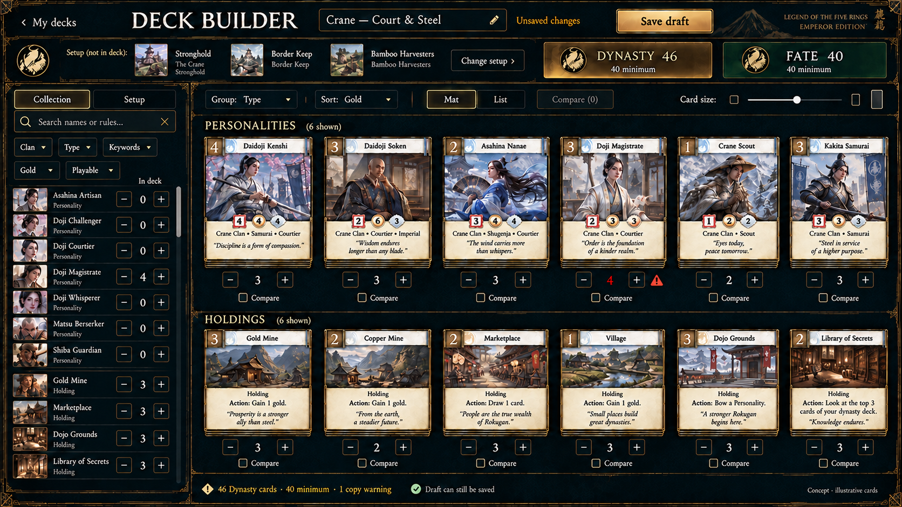
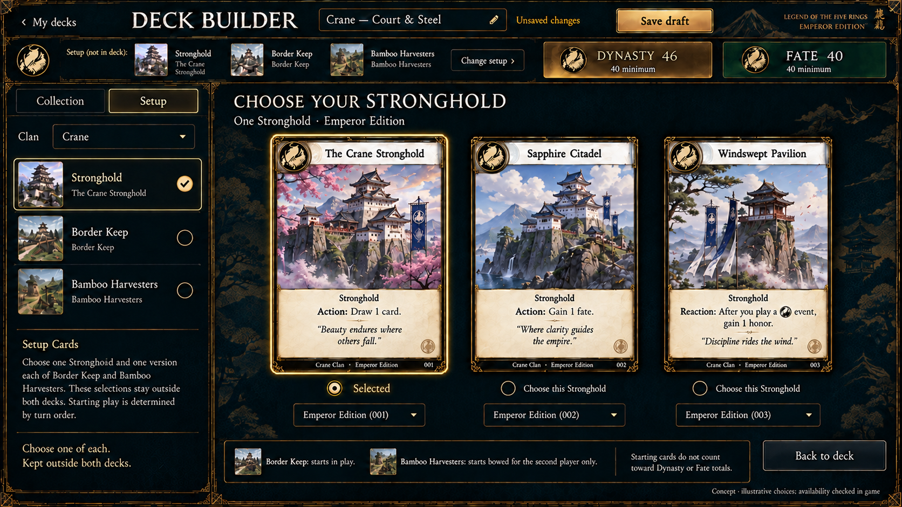
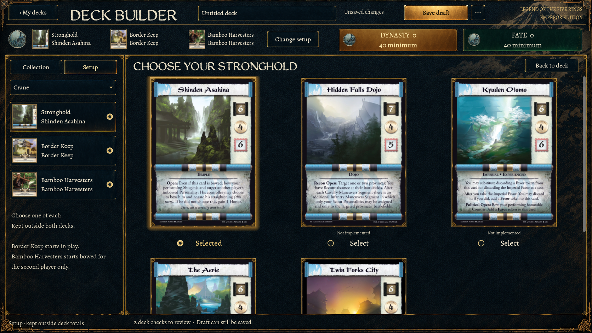
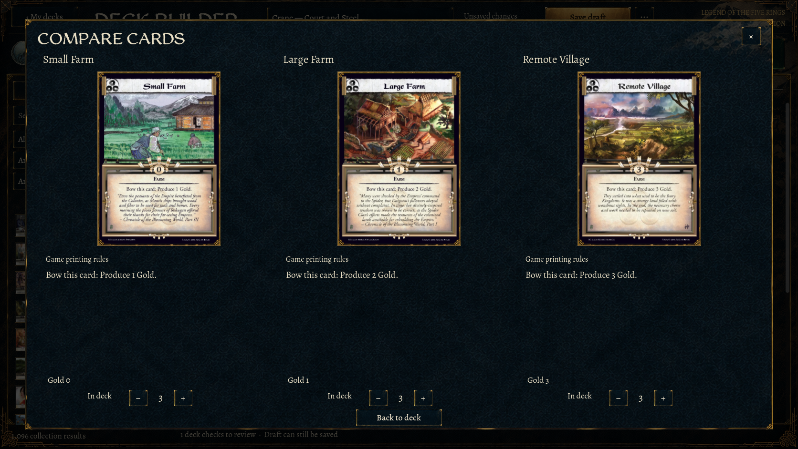
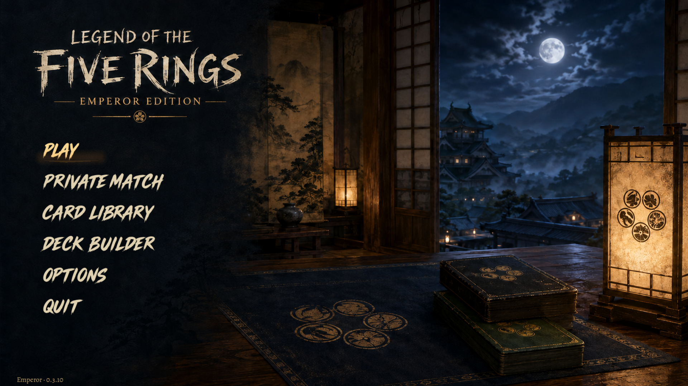

Grouped mat



Approved compositions beside native Godot captures. Actual catalogue scans replace illustrative generated cards. Requested refinements: Select; no printing dropdown or Stronghold subtitle; plain − / number / +; no “copies”; Compare beside Mat/List.






